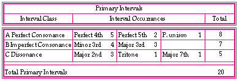

In the following examples the words "Primary" and "Secondary" intervals are used to distinguish the well-tuned consonances from their adjacent microtone intervals, those intervals which were named "Sharp Major 3rd", "Flat Perfect 5th", "Sharp Perfect 4th" et cetera. The latter are not too high or too low in frequency ratio to be called augmented or diminished. In order to remain as close as possible to the traditional names when it came to microtone intervals, the "Primary" and "Secondary" categories were adopted.
The interval results were placed in their respective tables as shown in the following Examples 8-10, which state the Primary and Secondary interval categories, and their individual occurrences.
Example 8 shows the total of 20 Primary intervals: 8 perfect consonances, 7 imperfect consonances, and 5 dissonances. Even though these intervals were composed in microtonality there were more intervals belonging to the Primary category than there were in the Secondary category.
Example 8: Primary intervals' table.

Original file name: c1Reteplas - converted on Tuesday, 24 June 1997, 21:00